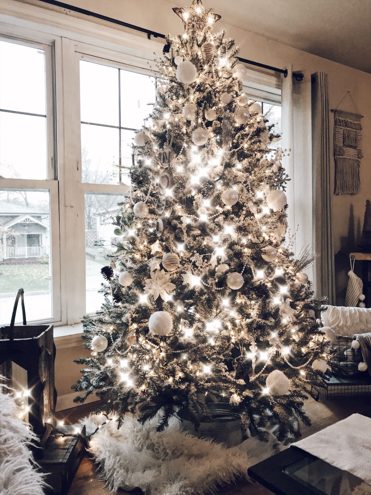
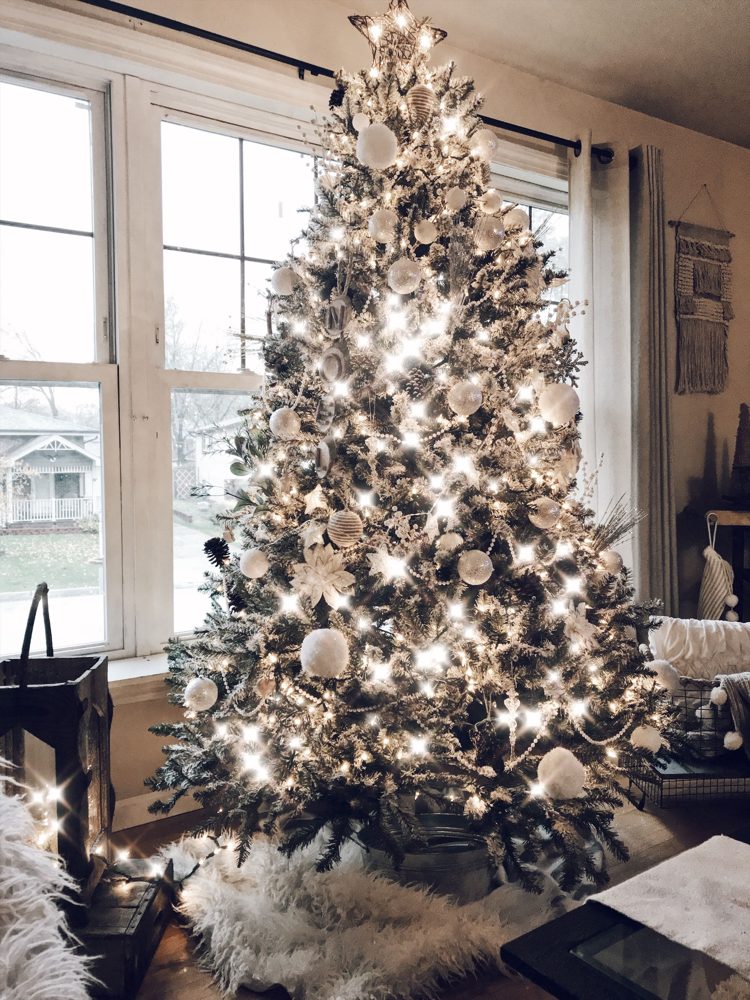

The holidays are just around the corner—you’ll be decking the halls with Christmas decorations before you know it. While wreaths, stockings, and your classic well-appointed pine tree are de rigueur this time of year, your decorations can always use a refresh. (After all, nothing will cramp your style like mini Santas or Rudolph the Red-Nosed Reindeer everywhere.) Admittedly, Christmas decorations can feel a little constricting, as if straying from a red-and-green color palette will land you on the naughty list. But as it turns out, Christmas decor is packed with unlimited design potential—you just need to get a little creative.
To help kick-start your inspiration, feast your eyes on the 75 divine Christmas decorating ideas here. From pared-down wrapping paper to glitzy accessories to an innovative alternative to your favorite holiday staples, we’re positive you’ll find something to make your spirits merry, bright, and oh so beautiful.
 
